Audience: Rebel users (knowledge workers) concerned about where information gets saved and privacy boundaries
Reading time: 25-30 minutes
Prerequisites: Basic familiarity with Rebel workspace and spaces
Four core concepts for understanding Rebel's memory system:
Think of Rebel's memory like a library with two sections:
Topic files often point to external sources (Gmail, Notion, files) rather than duplicating content.
Why this matters: Keeps context manageable while ensuring essential facts are always available and detailed context is just a search away.
Memory has two parallel systems:
Key rule: Topics cite sources for provenance, but sources don't backlink to topics. This keeps sources stable when you reorganize topics.
Why this matters: You can trace any fact back to its original source, and sources stay clean even as your knowledge evolves.
Don't think of memory files as storing information. Instead, think of them as a library catalog system:
The SSOT Principle: Every fact lives in ONE canonical place (Single Source Of Truth). Memory files point to that place, they don't duplicate it.
Why this matters: Prevents information from going stale, reduces duplication, and keeps memory files lightweight.
Think of your Rebel workspace as having two main privacy zones:
Simple rule: Personal and sensitive information goes in Chief-of-Staff. Work content that your team should see goes in the work space.
Why this matters: Keeps decision-making simple — ask yourself "should my team see this?" and you'll know where to save it.
Rebel's memory system is a structured knowledge architecture that helps the AI assistant maintain context about you, your work, and your preferences across conversations. Unlike simple chat history, it's organized into tiers, respects privacy boundaries, and uses pointers to avoid duplicating information.
The core problem it solves: You don't want to repeat yourself in every conversation ("I work at Company X", "My timezone is Y", "Here's how I prefer emails drafted"). But you also don't want everything loaded into every conversation (too much context), and you definitely don't want sensitive personal information accidentally shared in company spaces.
The solution: A two-tier memory system (auto-loaded + on-demand) with sources for first-party content, all organized across privacy-bounded spaces.
If you're familiar with tools like Notion, Evernote, or Obsidian, here's how Rebel memory compares:
Key difference: Rebel memory is designed for AI consumption first, not human browsing. It prioritizes source attribution, utility-based tiering, and privacy boundaries.
This diagram shows how information flows from sources through the memory model, gets organized across space boundaries, and follows privacy rules to determine storage location:

Source: View Mermaid source
Let's understand what happens when you interact with Rebel and memory gets created or accessed.
Chief-of-Staff/README.md (auto-loaded context)memory/topics/*.md files (on-demand)Memory isn't just storage - it's a routing and retrieval system. The AI uses it to know where to look for information when you ask questions.
At a high level:
Now let's understand each component of the memory system more deeply.
Purpose: Essential facts that should be present in 50%+ of conversations.
Location: Chief-of-Staff/README.md, work/Company/README.md
Size limit: Keep concise - this is loaded into every conversation's context window
Example auto-loaded section from Chief-of-Staff/README.md:
## Profile
Key facts:
- Name: [Your Name]
- Email: [your.email@company.com]
- Teams: [Your teams]
- Location/timezone: [Your timezone]
## AI Working Context
- Communication preferences: [e.g., "Prefers concise, actionable responses"]
- Current focus: [Active projects, priorities]
- Working on: [[topics/Current-Project]]
## Frequently Useful References
- [[topics/Project-Name]] - Brief description (25%+ utility topics only)Note: Details live in topic files, not here. This section just signposts to detailed context.
During Rebel's startup process for every conversation:
AGENTS.md (symlink to rebel-system/)Chief-of-Staff/README.mdYou don't need to @ mention these files - they're always present.
Purpose: Detailed context loaded only when relevant (<50% conversation utility).
Location: Chief-of-Staff/memory/topics/, work/Company/memory/topics/
Access pattern: Rebel searches for relevant files using semantic search (@files) or you @ mention them explicitly
Example topic file structure:
---
updated: 251026
tags: [client, consulting, acmeconsulting]
sensitivity: 0.3
description: "Client relationship context for Acme Corp"
---
# Acme Corp Client Context
## Quick summary
Tech startup client since March 2024, AI enablement project, monthly retainer.
## Signposts (SSOT)
- Primary: Gmail query: `from:contact@acme.com OR to:contact@acme.com newer_than:6m`
- Contract: /Users/jane/Documents/Contracts/Acme-2024.pdf
- Project board: https://notion.so/acme-project-board
## Key facts
- Contact: Sarah Johnson (CTO)
- SSOT: Gmail query above | Updated: 251026 | Confidence: high
- Contract value: $8k/month retainer
- SSOT: /Users/jane/Documents/Contracts/Acme-2024.pdf | Updated: 251026 | Confidence: high
## See also
- [[topics/AcmeConsulting/services]] - Service offerings
- [[skills/client-management/meeting-prep]] - Meeting prep workflowNote: Facts include source attribution. No email content is duplicated here.
Use single file (memory/topics/topic-name.md) when:
Use folder (memory/topics/topic-name/) when:
Example folder structure:
memory/topics/AcmeConsulting/
AcmeConsulting.md # Main overview (entry point)
services.md # Service catalog
client-Acme.md # Client-specific detail
client-BetaCorp.md # Another client
invoicing-workflow.md # Process documentationThe main AcmeConsulting.md file acts as an index signposting to the detail files.
Purpose: Capture first-party content (meetings, emails, Slack threads) with provenance metadata for traceability.
Location: memory/sources/YYYY/MM-MMM/DD/ (organized by date)
Access pattern: Topics cite sources for provenance; sources don't backlink to topics (one-way linking)
Any raw, original content that could be cited as evidence or detail for a topic:
When NOT to create a source file: Quick Q&A, routine updates, ephemeral chat, bug fixes, simple pages. For these, just extract relevant facts directly to topic files.
Filename format: yyMMdd_HHmm_source-type_description.md
Example: memory/sources/2025/12-Dec/15/251215_1000_meeting_q3-review.md
---
description: Q3 quarterly review with leadership
source_type: meeting
source_system: fireflies
source_account: user@company.com
source_uid: abc123xyz
source_url: https://app.fireflies.ai/view/abc123xyz
stored_at: 2025-12-15
occurred_at: 2025-12-15
participants: [Jane Smith, Bob Chen, Carol Davis]
duration_minutes: 45
---
# Q3 Quarterly Review
## Summary
Brief 3-5 sentence summary of key outcomes and decisions.
## Key Takeaways
- Important decision 1
- Important decision 2
- Action item assigned
## Full Content
[Complete meeting transcript with speaker attribution]For full details, see source-capture skill.
When you add facts to a topic file, cite the source:
## Key facts
- Budget: $500k (confirmed in [[sources/2024/10-Oct/15/241015_1000_meeting_q3-review]])
- Timeline: Q1 launch (from [[sources/2024/11-Nov/03/241103_1430_email_timeline-discussion]])One-way linking: Topics cite sources, but sources do NOT backlink to topics. This keeps source files stable when you reorganize your knowledge.
Sources are first-party content you've captured and preserved in your workspace (meeting transcripts, saved emails). External SSOT (Single Source of Truth) refers to live data in external systems that you point to rather than copy — like Gmail queries that fetch current emails, or Notion URLs. Both approaches avoid duplication, but sources preserve a snapshot while SSOT pointers always fetch current data.
Now that you understand the memory architecture, let's explore where to save information based on privacy requirements.
Spaces are folders within your Rebel workspace that have different sharing settings. Think of them as security zones.
Rebel-workspace/
Chief-of-Staff/ 🔒 Your private space
README.md (Your identity, preferences)
memory/topics/ (Personal topics, sensitive info)
memory/sources/ (Personal source captures)
work/Company/ 👥 Shared work space
README.md (Team can see this)
memory/topics/ (Team-visible project context)
memory/sources/ (Shared source captures)
skills/ (Shared workflows)
rebel-system/ 🌍 Platform (read-only)
skills/
help-for-humans/Chief-of-Staff/ (Your private space):
work/Company/ (Shared work space):
rebel-system/ (Platform core):
Each space's README.md includes YAML frontmatter to help Rebel route correctly:
---
rebel_space_description: "Company-wide skills and memory for Mindstone"
space_type: "company" # personal | company | team | shared | project | router
sharing: "company-wide" # private | team | company-wide | public
sensitivity: "standard" # standard | confidential | restricted
related_spaces: ["Exec", "Chief-of-Staff"]
owner: "jane@company.com"
---How Rebel uses this:
sharing field → Determines if content can be referenced in team contextssensitivity → Affects how carefully Rebel handles informationrelated_spaces → Helps Rebel know which other spaces might have relevant contextEven within a single space, you can mark different sections with different privacy levels.
You can add your own privacy rules to your Chief-of-Staff/README.md. For example:
Rebel will follow these rules when deciding where to save information.
Within any memory topic file, you can use section headers to separate content by visibility:
# Client Meeting Notes - Acme Corp
## SHAREABLE
- Meeting date: Jan 15, 2026
- Attendees: Jane (me), Sarah (Acme CTO), Tom (colleague)
- Topics discussed: Q1 roadmap, API integration timeline
- Next steps: Draft technical proposal by Jan 22
## PERSONAL
- My concerns: Timeline is aggressive, might need to push back
- Personal note: Sarah's communication style reminds me of previous client
- Mental reminder: Don't commit to deadline without checking team capacityRule: Only create sections when content exists for that sensitivity level. When unclear about sensitivity, ask the user - never assume something is shareable.
Section header patterns:
## PERSONAL - Never leaves Chief-of-Staff/, even if file is elsewhere (salary, equity, private reflections)## SHAREABLE - Can be shared in the work space (client facts, project status)You can also mark entire files with a sensitivity score (0.0-1.0 scale):
---
updated: 251026
tags: [compensation, personal]
sensitivity: 0.9 # High - careful handling required
description: "Salary and equity compensation details"
---Sensitivity scale interpretation:
How Rebel uses this: When sensitivity >0.7, Rebel will be extra cautious about where it references this information and will ask before sharing details.
When new information needs to be saved, here's a simple two-question flow:
Examples of sensitive/personal:
If YES → Save to Chief-of-Staff/
If NO → Continue to Question 2
Examples of team-shareable work content:
If YES → Save to work/Company/ (shared work space)
If NO → Save to Chief-of-Staff/ (your private space)
Rebel will ask you before saving potentially sensitive information to shared spaces. It's always better to start more private and move outward with explicit permission than to accidentally leak sensitive info.
Now let's see how memory files are actually structured and managed.
Every memory topic file follows a standard template to ensure consistency and proper source attribution.
---
updated: yyMMdd # Last modified date (251026 format)
tags: [topic, domain, workflow]
sensitivity: 0.0-1.0 # Privacy score
description: "Single-line summary of what this file contains"
---
# [Topic Name]
## Quick summary
2-3 sentences with main takeaways. Keep details out; link to SSOT below.
This section should give someone the gist without reading further.
## Signposts (SSOT)
- Primary SSOT: /path/to/file OR https://notion.so/... OR Gmail query: ...
- Related: Additional canonical sources
- See also: Related memory files and skills
## Key facts (with per-fact SSOT)
- Fact: {short factual statement}
- SSOT: {canonical link/path/query}
- Updated: yyMMdd
- Confidence: low | med | high
- Another fact: {statement}
- SSOT: {source}
- Updated: yyMMdd
- Confidence: med
## See also
- [[topics/related-topic]] - Description of relation
- [[skills/category/skill-name]] - Related workflow
- https://external-resource.com - External referenceSection explanations:
---
updated: 251026
tags: [client, consulting, acmeconsulting]
sensitivity: 0.3
description: "Acme Corp client relationship context and project status"
---
# Acme Corp Client Context
## Quick summary
Tech startup client since March 2024 for AI enablement consulting. Monthly $8k retainer, primary contact Sarah Johnson (CTO). Current focus: Q1 roadmap and API integration.
## Signposts (SSOT)
- Primary: Gmail query: `(from:sarah@acme.com OR to:sarah@acme.com OR cc:sarah@acme.com) newer_than:6m`
- Contract: /Users/jane/Documents/Contracts/Acme-2024-03-15.pdf
- Project board: https://notion.so/acme-project-board-abc123
- Invoices: /Users/jane/Documents/Invoices/Acme/
## Key facts (with per-fact SSOT)
- Client name: Acme Corp
- SSOT: Contract above | Updated: 251026 | Confidence: high
- Primary contact: Sarah Johnson, CTO (sarah@acme.com)
- SSOT: Gmail query above | Updated: 251026 | Confidence: high
- Contract: $8,000/month retainer, started March 2024
- SSOT: /Users/jane/Documents/Contracts/Acme-2024-03-15.pdf | Updated: 251026 | Confidence: high
- Recent meeting: Jan 10, 2026 - discussed Q1 priorities
- SSOT: Gmail query: `from:sarah@acme.com subject:"meeting notes" after:2026-01-01` | Updated: 251026 | Confidence: high
- Next deliverable: Technical proposal due Jan 22, 2026
- SSOT: Gmail thread "Re: Q1 Planning" Jan 10 | Updated: 251026 | Confidence: med
## See also
- [[topics/AcmeConsulting/services]] - Service catalog
- [[topics/AcmeConsulting/invoicing-workflow]] - How to invoice clients
- [[skills/client-management/meeting-prep]] - Meeting preparation workflowNote what's NOT here: Full email transcripts, entire meeting notes, complete contract text. Those live in the SSOT locations. This file just summarizes and points.
The most critical principle in Rebel's memory system: Every fact must have a traceable source.
Rebel is explicitly instructed: No assumptions, guesses, or inferences in memory files. If uncertain about any detail, ask the user first. It's always better to ask than to assume.
Problem scenario without SSOT:
Solution with SSOT:
Benefits:
Gmail query format:
SSOT: Gmail query: `from:client@acme.com subject:"contract" newer_than:3m`Rebel can execute this query to fetch current emails when needed.
Notion URL format:
SSOT: https://notion.so/workspace/page-title-abc123def456Direct link to Notion page (Rebel can fetch via built-in Notion connector).
File path format:
SSOT: /Users/jane/Documents/Contracts/Acme-2024-03-15.pdfAbsolute path to local file (Rebel can read).
Folder location format:
SSOT: /Users/jane/Documents/ProjectX/ (see README.md and specs/)Directory containing multiple related files.
Slack search format:
SSOT: Slack #engineering channel, search: "database migration" after:2025-12-01Slack search query that retrieves relevant thread.
Web URL format:
SSOT: https://company.com/docs/technical-specs (retrieved 2025-12-16)External public URL (include retrieval date since web content changes).
Not every conversation results in memory updates. Here are the guidelines Rebel follows:
Example conversation triggering memory update:
User: "I've joined the Executive team at Acme as of this month."
Rebel: "I'll update your Chief-of-Staff/README.md to reflect your new team membership. Should I also note this in work/Acme/Exec/README.md for team-visible context?"
User: "Yes, please."
Rebel: Updates both files with minimal changes:
- Chief-of-Staff/README.md: Adds "Exec" to TEAMS list
- work/Acme/Exec/README.md: Adds you to team member list
Practical examples of how to handle common memory situations.
Situation: Your manager just confirmed a salary increase to $120k/year plus 1.5% equity.
Solution:
Chief-of-Staff/memory/topics/Compensation-YourName.md (NOT in any work space)## PERSONAL (even though file is already private)---
updated: 251216
tags: [compensation, personal, confidential]
sensitivity: 0.9
description: "Salary and equity compensation details - HIGHLY SENSITIVE"
---
# Compensation - Jane Smith
## PERSONAL
### Current compensation (as of Dec 2025)
- Base salary: $120,000/year (increased from $100k)
- SSOT: Email from manager@company.com "Re: Salary Adjustment" Dec 15, 2025
- Updated: 251216 | Confidence: high
- Equity: 1.5% of company (vested over 4 years)
- SSOT: /Users/jane/Documents/Employment/Equity-Agreement-2025-12-15.pdf
- Updated: 251216 | Confidence: high
## Signposts
- Primary: /Users/jane/Documents/Employment/
- Related: Gmail query: `from:manager@company.com subject:salary OR subject:compensation`Why this works: Completely private, clear SSOT, high sensitivity marking, never touches company-shared spaces.
Situation: You're the account lead for client "Acme Corp". Your colleagues need context to jump in if you're unavailable.
Solution: Use section markers to separate team-shareable from personal notes.
work/Company/memory/topics/clients/Acme-Corp.md (shared work space)## SHAREABLE for facts, ## PERSONAL for your private notes---
updated: 251216
tags: [client, account-management]
sensitivity: 0.4
description: "Acme Corp client relationship context and history"
---
# Acme Corp Client Context
## SHAREABLE
### Quick summary
B2B SaaS client since March 2024, $12k/month retainer for AI consulting. Primary contact: Sarah Johnson (CTO). Current project: API integration for Q1 launch.
### Key contacts
- Sarah Johnson, CTO (sarah@acme.com) - Decision maker, technical
- Mike Chen, Product Lead (mike@acme.com) - Day-to-day collaboration
- SSOT: Gmail query: `from:*@acme.com OR to:*@acme.com` | Updated: 251216
### Contract details
- Value: $12,000/month retainer
- Start date: March 15, 2024
- SSOT: Company shared drive Contracts folder | Updated: 251216
### Recent activity
- Dec 10 meeting: Discussed Q1 roadmap priorities
- Next milestone: Technical proposal due Dec 22
- SSOT: Notion project board | Updated: 251216
## PERSONAL
### My private notes
- Sarah can be direct/blunt - don't take it personally, just her communication style
- They're budget-conscious - always emphasize ROI in proposals
- Mike is enthusiastic but needs technical validation from Sarah before committing
- Remind myself: Don't commit to deadlines without checking team capacity first
- Potential upsell opportunity: They mentioned interest in training package (pursue in Q1)Why this works:
Situation: You're working on "Project Phoenix" - a major Q1 initiative. Should this be in README.md (auto-loaded) or topics/?
Decision framework:
Ask yourself: Will I reference Project Phoenix in >50% of my conversations with Rebel over the next month?
Recommended approach (best of both worlds):
In Chief-of-Staff/README.md (auto-loaded):
## Current Priorities (Dec 2025)
- **Project Phoenix** - Q1 flagship initiative, launch target Feb 1
- Details: [[topics/Project-Phoenix]] (on-demand)
- Status: Development phase, 60% completeIn Chief-of-Staff/memory/topics/Project-Phoenix.md (on-demand):
---
updated: 251216
tags: [project, q1-priority, product-launch]
sensitivity: 0.5
description: "Project Phoenix Q1 initiative - detailed context and status"
---
# Project Phoenix
## Quick summary
Major product launch initiative for Q1 2026. Goal: Ship AI-powered analytics dashboard by Feb 1. Cross-functional team of 8, budget $150k.
## Signposts
- Primary: Notion project board: https://notion.so/project-phoenix-board
- Technical specs: /Users/jane/Documents/Projects/Phoenix/specs/
- Slack channel: #project-phoenix
- Weekly updates: Gmail label: "phoenix-updates"
## Key facts
[Detailed project information with SSOT references...]
## See also
- [[topics/Q1-OKRs]] - How this ties to company objectives
- [[skills/project-management/weekly-standup-prep]] - Prep workflowWhy this works:
Situation: You frequently email with several clients. Should you save email threads to memory?
Solution: Store query patterns, not email content.
Example memory file (memory/topics/email-context.md):
---
updated: 251216
tags: [email, communication, contacts]
sensitivity: 0.3
description: "Email contact patterns and Gmail query strings for frequent correspondents"
---
# Email Context and Patterns
## Client Communication Patterns
### Acme Corp (SaaS client)
- **Primary contact**: Sarah Johnson (sarah@acme.com)
- **Gmail query**: `from:sarah@acme.com OR to:sarah@acme.com OR subject:"acme" newer_than:90d`
- **Cadence**: Weekly check-ins, monthly formal reports
- **Recent**: Q1 planning discussion (Dec 10)
### BetaCorp (Consulting client)
- **Primary contact**: Mike Lee (mike@betacorp.com)
- **Gmail query**: `from:mike@betacorp.com OR to:mike@betacorp.com newer_than:90d`
- **Cadence**: Bi-weekly sprints
- **Recent**: Sprint planning email (Dec 8)
## Internal Team Communication
### Manager 1:1s
- **Contact**: Manager Name (manager@company.com)
- **Gmail query**: `from:manager@company.com subject:"1:1" OR subject:"check-in" newer_than:180d`
- **Cadence**: Bi-weekly
- **Recent**: Career development discussion (Dec 5)What NOT to do:
❌ DON'T DO THIS:
## Email from Sarah (Dec 10)
Hi Jane,
Following up on our call yesterday. Here are the Q1 priorities:
1. API integration
2. Dashboard redesign
3. Mobile app beta
Let me know your thoughts.
Best,
SarahWhy? This email content will become stale. Instead, store the query that retrieves current emails when needed.
When you ask Rebel: "What did Sarah say about Q1 priorities?"
Rebel will:
Benefits:
Situation: You've been developing a workflow skill in your personal space. Now your team wants to use it too.
Solution: Move the skill, update references, add team context.
Chief-of-Staff/skills/meeting-prep.mdwork/Company/skills/meeting-prep.mdProcess:
# 1. Copy file to new location
cp Chief-of-Staff/skills/meeting-prep.md \
work/Company/skills/meeting-prep.md
# 2. Update file frontmatter in new location
# Change sensitivity from 0.9 (personal) to 0.3 (team-shareable)
# 3. Remove any PERSONAL sections
# Review content for anything private (personal preferences, etc.)
# 4. Update cross-references
# Find files that reference the old location and update themUpdate old file: Replace with redirect/deprecation notice:
---
deprecated: true
redirect: work/Company/skills/meeting-prep.md
---
# Meeting Prep [DEPRECATED]
This skill has moved to the shared work space.
**New location**: [[work/Company/skills/meeting-prep]]
This file will be removed after [DATE].Why this works:
Key files and directories in Rebel's memory system:
Contains the base system prompt that all Rebel agents load, including privacy rules and memory management guidelines. Read-only, maintained by Mindstone.
Explains the memory/ folder structure for personal and team-specific working files.
Describes space types, sharing settings, and organization patterns.
Comprehensive privacy policy covering data storage, third-party AI APIs, MCP services, and best practices.
Automatically maintains memory after conversations, extracting and organizing facts based on utility thresholds. Runs in the background after each turn.
Captures first-party sources (meetings, emails, Slack threads) as structured files with provenance metadata. Used when preserving important content.
Your identity, preferences, cross-space context. Loaded automatically in every conversation. Keep concise (50%+ utility facts only).
Detailed personal context loaded when @ mentioned or via semantic search (@files). Examples: compensation info, personal projects, private reflections.
First-party content captures (meetings, emails, Slack threads) organized by date. Topics cite these for provenance.
Team-visible facts loaded automatically when working in this space. Company info, team structure, shared priorities.
Detailed company/team context. Examples: client relationships, project documentation, team workflows. Visible to your team.
Team-visible source content (meeting transcripts, important email threads). Topics cite these for provenance.
@files in your message to trigger semantic search across your workspace@path/to/file.md to explicitly mention a specific memory file
Last updated: 2026-01-06
For questions or corrections, see the help-for-humans/ docs or mindstone.com